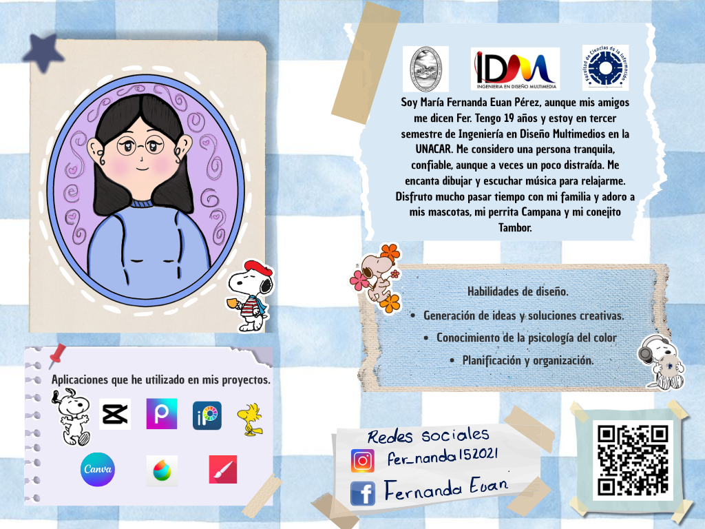
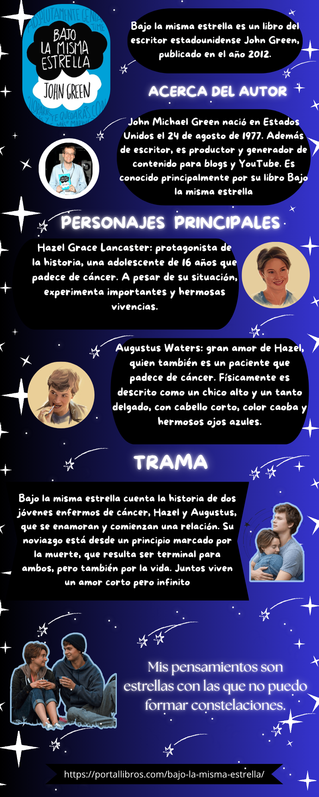

Proyectos enfocados en la síntesis de información y comunicación visual. Utilizo jerarquías tipográficas y elementos gráficos para transformar datos en experiencias visuales claras y atractivas.

Diseño con estilo Scrapbook que utiliza texturas orgánicas y elementos de papelería digital para presentar una biografía personal con un enfoque artístico y cercano.

Infografía temática de la obra "Bajo la misma estrella". Aplicación de contrastes cromáticos y una estructura vertical optimizada para la lectura rápida de puntos clave.